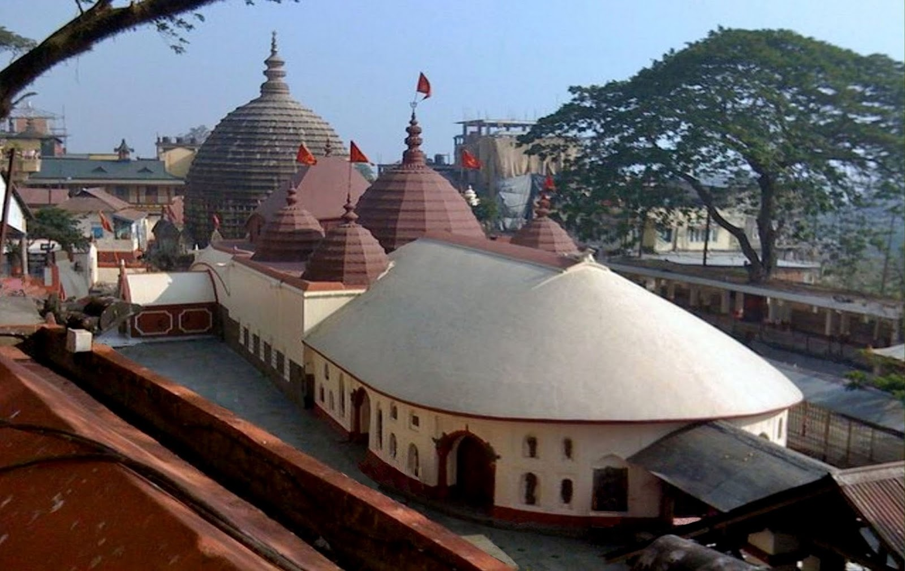

Day 1: Arrival | Route: Guwahati City
- Activity: Arrive in Guwahati. Visit Kamakhya Temple and catch the sunset cruise on the Brahmaputra.
- Stay: Guwahati.
Assam is the vibrant gateway to Northeast India, dominated by the mighty Brahmaputra River and the lush green Barak Valley. It is a land where history is written in the resilient monuments of the Ahom Dynasty, who ruled for 600 years without ever being conquered by the Mughals.
The state's soul beats to the rhythm of the Bihu festival and the spiritual chants of the Vaishnavite Satras (monasteries). From the rolling tea gardens that produce the world's finest strong tea to the golden Muga silk weaving villages, Assam is a perfect blend of nature, heritage, and industrial history.
Some Interesting Facts about Assam:
Kaziranga National Park: The Big Five
|

|
|
 |
Guwahati & Kamakhya: The Spiritual Hub
|
Majuli: The Cultural Island
|

|

|
Sivasagar: The Ahom Capital
|
1. By Air
|
2. By Rail
|
|
3. By Road
Roads in Assam are generally flat and well-maintained.
|
Choose Your Vibe
The Rhino & River CircuitBest for: Wildlife enthusiasts, families, and culture lovers.Day 1: Arrival | Route: Guwahati City
Day 2: Into the Wild | Route: Guwahati ➔ Kaziranga
Day 3: The Safari Day | Route: Kaziranga Jungle
Day 4: The River Island | Route: Kaziranga ➔ Majuli
Day 5: Island Life | Route: Majuli Exploration
Day 6: Tea Capital | Route: Majuli ➔ Jorhat
Day 7: Departure
|
The Heritage & Hills TrailBest for: History buffs, nature lovers, and offbeat travelers.Day 1: The Silk Town | Route: Guwahati ➔ Sualkuchi
Day 2: The Biosphere | Route: Guwahati ➔ Manas National Park
Day 3: Wildlife & Bhutan Border | Route: Manas
Day 4: Ancient History | Route: Manas ➔ Tezpur
Day 5: Ahom Glory | Route: Tezpur ➔ Sivasagar
Day 6: Maidams & Palaces | Route: Charaideo Exploration
Day 7: Departure
|
| Time | Best For |
|---|---|
| November to April | Peak Season: Cool, pleasant weather. Perfect for wildlife safaris (Kaziranga opens Nov 1st). |
| April (Mid) | Rongali Bihu: The Assamese New Year. Best for witnessing vibrant Bihu dances and festivities. |
| May to September | Monsoon: Heavy rains and potential floods. Parks are closed, but nature is lush green. |
Important things to know before you pack your bags.
Unlike Arunachal or Nagaland, Indian citizens do not need an ILP to visit Assam. You can enter freely with any valid ID proof. Foreign nationals also do not need a PAP, except for specific restricted areas.
Kaziranga is very popular. Elephant safaris have limited seats and sell out weeks in advance. Book your jeep and elephant rides online or through your hotel well before you arrive.
Like the rest of the Northeast, the sun sets by 4:30 PM in winter. Shops in small towns close early (7:00 PM). Plan your travel to reach your destination before dark.
When visiting Majuli's Satras, dress modestly. Remove your shoes before entering the prayer halls. Some areas may be restricted for photography.
Assam receives rainfall almost throughout the year (except deep winter). Always carry an umbrella or a raincoat, as showers can be sudden.
If staying in a Tea Garden bungalow, remember these are often private properties. Do not wander into the factory areas without permission or disturb the tea pluckers while they are working.